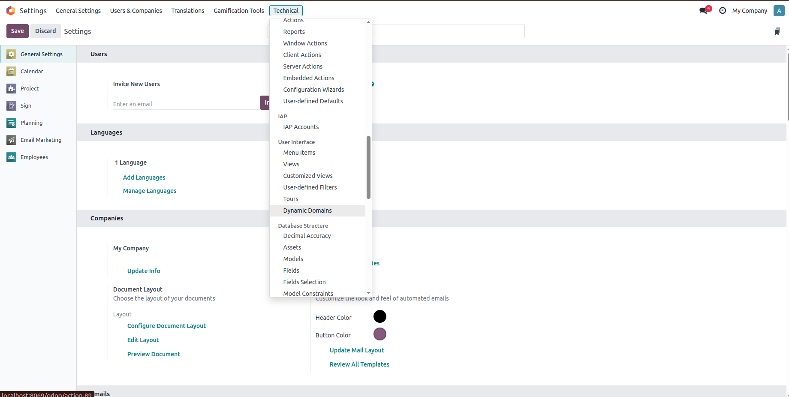
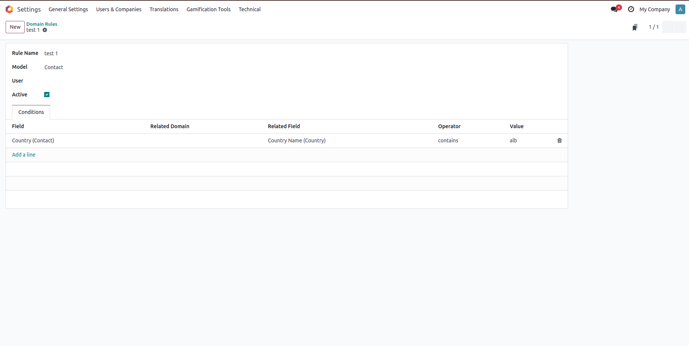
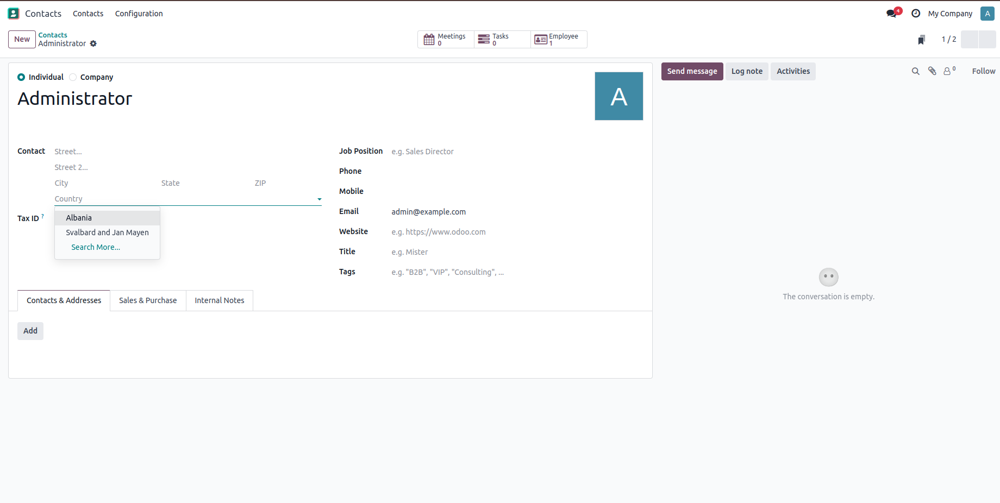

This module allows you to define dynamic domains (filters) that are automatically applied to form fields. You can configure rules per user or globally, based on related fields such as name, tags, date, etc.
=, !=, in, contains, >, <, etc.
Define your rules using a simple form. Choose the model, the field to apply the domain to, and a related field for evaluation.

Go to Settings - Technical - Dynamic Domains to manage all your rules. Easy to access, easy to extend.
